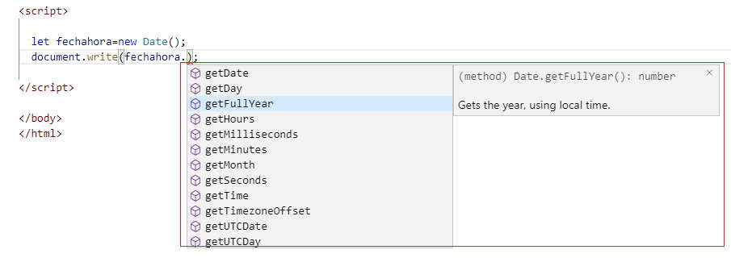

Listado completo de tutoriales
Clase Date |
JavaScript dispone de varias clases predefinidas para acceder a muchas de las funciones normales de cualquier lenguaje, como puede ser el manejo de vectores o el de fechas.
Esta clase nos permitirá manejar fechas y horas. Se invoca así:
fecha = new Date();//creación de un objeto de la clase Date fecha = new Date(año, mes, dia); fecha = new Date(año, mes, dia, hora, minuto, segundo);
Si no utilizamos parámetros, el objeto fecha contendrá la fecha y hora actual, recuperadas del reloj de nuestra computadora. En caso contrario hay que tener en cuenta que los meses comienzan por cero. Así, por ejemplo:
navidad2020 = new Date(2020, 11, 25)
El objeto Date dispone, entre otros, de los siguientes métodos:
getFullYear()
setFullYear(año)
getMonth()
setMonth(mes)
getDate()
setDate(dia)
getHours()
setHours(horas)
getMinutes()
setMinutes(minutos)
getSeconds()
setSeconds(segundos)
Obtienen y colocan, respectivamente, el mes, día, hora,
minuto y segundo de la fecha.
getDay()
Devuelve el día de la semana de la fecha en forma de
número que va del 0 (domingo) al 6 (sábado)
Ejemplo: Mostrar en una página la fecha y la hora actual.
<!DOCTYPE html>
<html>
<head>
<title>Ejemplo de JavaScript</title>
<meta charset="UTF-8">
</head>
<body>
<script>
function mostrarFechaHora() {
let fecha;
fecha = new Date();
document.write('Hoy es ');
document.write(fecha.getDate() + '/');
document.write((fecha.getMonth() + 1) + '/');
document.write(fecha.getFullYear());
document.write('<br>');
document.write('Es la hora ');
document.write(fecha.getHours() + ':');
document.write(fecha.getMinutes() + ':');
document.write(fecha.getSeconds());
}
//Llamada a la función
mostrarFechaHora();
</script>
</body>
</html>
En este problema hemos creado un objeto de la clase Date, para ello utilizamos la siguiente sintaxis:
let fecha;
fecha = new Date();
El operador new nos permite crear una instancia del a clase Date.
Luego llamamos una serie de métodos que nos retornan datos sobre la fecha y hora actual del equipo de computación donde se está ejecutando el navegador.
Es bueno notar que para llamar a los métodos disponemos:
<nombre de objeto>.<nombre de método>(parámetros)
Muchos editores de texto como el VSCode nos facilitan recordar los nombres de métodos cuando escribimos el nombre del objeto y el caracter punto:
